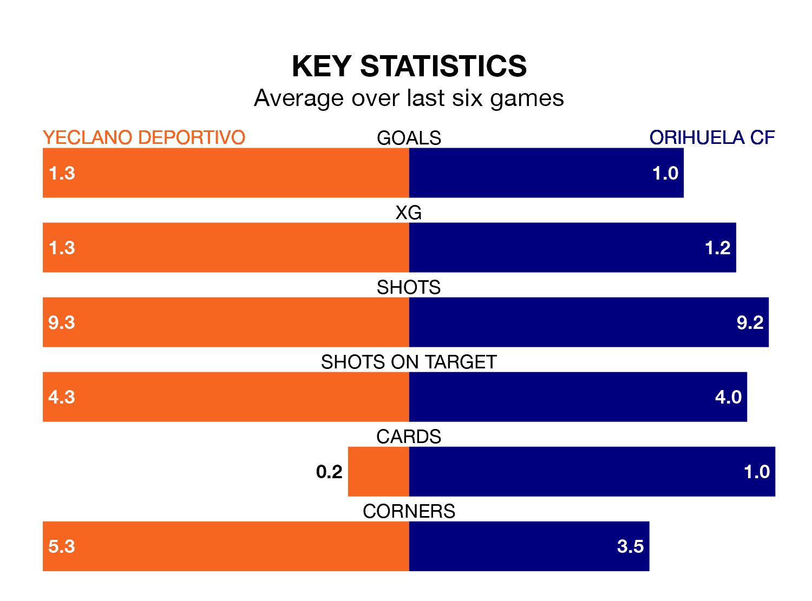

Orihuela CF face Yeclano Deportivo on Sunday seeking to protect their long unbeaten run in the Segunda División RFEF Group 4.
Orihuela are unbeaten in seven, with four wins and three draws, ahead of the 4pm kick-off.
They face a Yeclano Deportivo team who have won two and drawn four over the same number of games.
With 37 goals in 26 games so far this season, Yeclano Deportivo are the league's second-highest scorers with 1.4 goals per game. And they are conceding fewer than average, letting in 23 goals at a rate of 0.9 per game.
Orihuela, meanwhile, are average scorers, with 1.0 goal per game. They have conceded 1.1 goals per game.
The hosts are second in the table after 26 games, of which they have won 14 and drawn eight, earning 50 points.
The away team are five places behind Yeclano Deportivo in seventh, with 10 wins and eight draws putting them on 38 points.
Yeclano Deportivo's last match was on March 10, a 1-1 draw against CD El Palo, with Iván Pérez Vicente getting the goal for Yeclano Deportivo.
Orihuela drew 0-0 with Real Betis B last time out, also on Sunday.
Updated: 15:10 (UTC), 15/03/24